Chapter 10 Highlighting, annotating, and polishing graphs
library(tidyverse)
library(ggrepel)
rm(list=ls())
mtcars.df = mtcarsAll graphs should have axis labels with units Legends should have titles Titles are often included in the figure caption and not the graph Annotations can label points and tell a story Annotations can label lines better than legends
Labels and annotations added as another layer
Create a plot Add axis labels, with units Annotate to tell a story Select and appropriate color palette Place the legend inside the graph Change the theme to increase the data to ink ratio Check that changing the theme did not undo your legend placement Save as a 5X5 inch image in a format to minimize blur
10.1 Highlighting datapoints to make a point
h.mtcars.df = mtcars.df %>% mutate(highlight = if_else(cyl==8, "yes", "no"))
ggplot(h.mtcars.df, aes(x = as.factor(cyl), fill = highlight)) +
geom_bar(alpha = .6) +
scale_fill_manual(values = c("yes"="darkred", "no"="gray15"), guide = FALSE)
h.mtcars.df = mtcars.df %>% mutate(highlight = if_else(mpg>24 &wt>3, "yes", "no"))
ggplot(h.mtcars.df, aes(x = wt, y = mpg, colour = highlight)) +
geom_point() +
scale_color_manual(values = c("yes"="darkred", "no"="gray60"), guide = FALSE)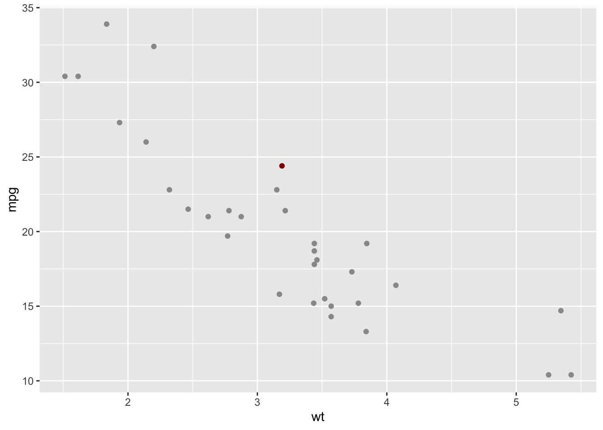
10.2 Labeling and annotation
10.2.1 Annotating data
## Text and rectangle annotation
ggplot(mtcars.df, aes(disp, mpg, color = as.factor(cyl))) +
annotate(geom = "rect", ymin = 20, ymax = 35, xmin = 65, xmax = 155, fill = "grey65", alpha = .5) +
annotate(geom = "text", x = 115, y = 36, label = "High-power cars" ) +
geom_point()+
labs(x = "Displacement (cubic inches)", y = "Efficiency (mile per gallon)",
title = "Efficiency and engine size", colour = "Number of cylinders")## Encircle pooints
library(ggalt)
ggplot(mtcars, aes(disp, mpg))+
geom_point()+
geom_encircle(data=filter(mtcars, mpg>24),
s_shape=0.75, expand=0.05) +
labs(title = "ggalt: encircle annotation")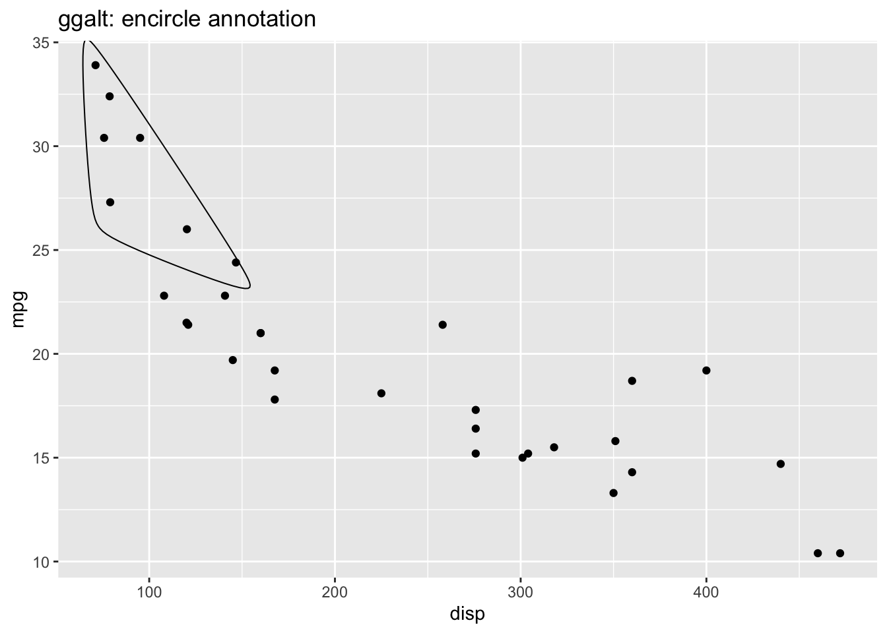
## Regresion equation
library(ggpmisc) # For stat_poly_eq for equation annotation
# https://cran.r-project.org/web/packages/ggpmisc/vignettes/user-guide-1.html
formula <- y ~ poly(x, degree = 1, raw = TRUE)
ggplot(mtcars, aes(x=disp, y=mpg)) +
geom_point() +
geom_smooth(method = "lm", formula = formula) +
stat_poly_eq(aes(label = paste(..eq.label.., ..adj.rr.label.., sep = "~~~~")),
formula = formula, parse = TRUE, coef.digits = 2,
label.x = 200, label.y = 30)
10.2.2 Time series with lines labeled
Based on example from: https://cran.r-project.org/web/packages/ggrepel/vignettes/ggrepel.html
library(ggrepel)10.2.3 Labelling lines, bars, points, and select points
library(ggrepel)
mtcars.df = mtcars
mtcars.df$name = row.names(mtcars.df)
## Lines with labels rather than legend
ggplot(Orange, aes(age, circumference, color = Tree)) +
geom_line() +
geom_text_repel(data = filter(Orange, age == max(age)),
aes(label = paste("Tree", Tree)),
size = 4, nudge_x = 45, segment.color = NA
) +
coord_cartesian(xlim = c(min(Orange$age), max(Orange$age) + 90)) +
theme(legend.position = "none") +
labs(x = "Age (days)", y = "Circumference (mm)")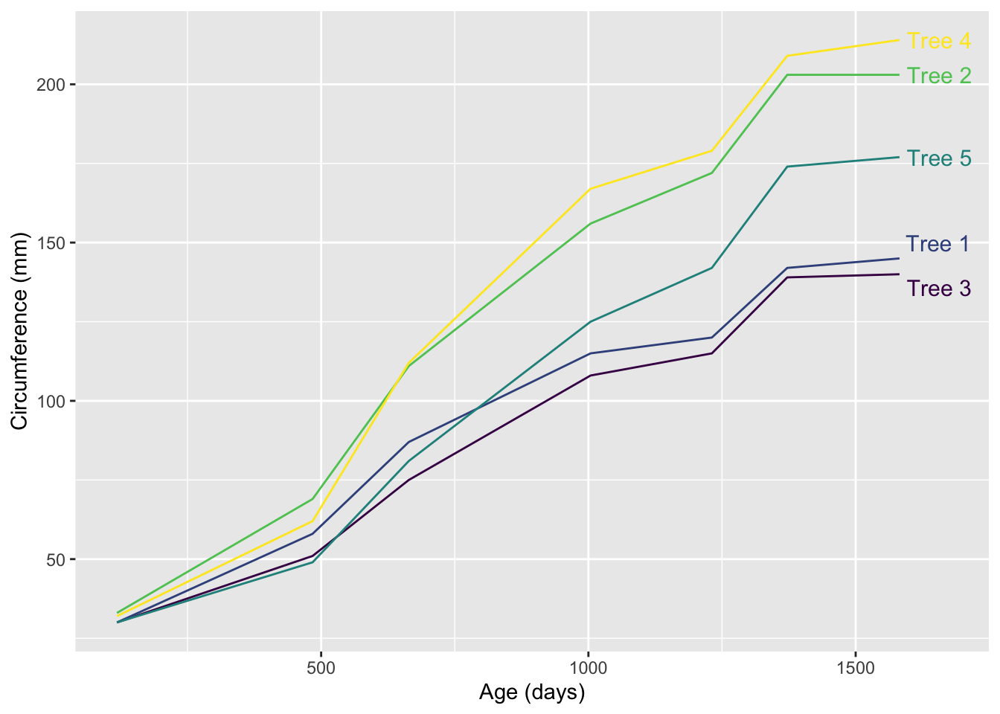
count.mtcars.df = mtcars.df %>%
mutate(cyl = as.factor(cyl), am = as.factor(am)) %>%
group_by(am, cyl) %>%
summarise(count = n()) %>%
mutate(label.pos = cumsum(count) - (0.1 * count))
ggplot(count.mtcars.df, aes(x = cyl, y = count, fill = am, label = count)) +
geom_bar(stat = "identity") +
geom_text(size = 3, position = position_stack(vjust = 0.5))## Annotated point
ggplot(mtcars.df, aes(disp, mpg, color = as.factor(cyl))) +
geom_point()+
geom_text_repel(aes(label = name), size = 2, show.legend = FALSE)## Subset annotated
ggplot(mtcars.df, aes(disp, mpg, color = as.factor(cyl))) +
geom_point()+
geom_text_repel(data = mtcars.df %>% filter(mpg>30), aes(label = name), size = 2, show.legend = FALSE)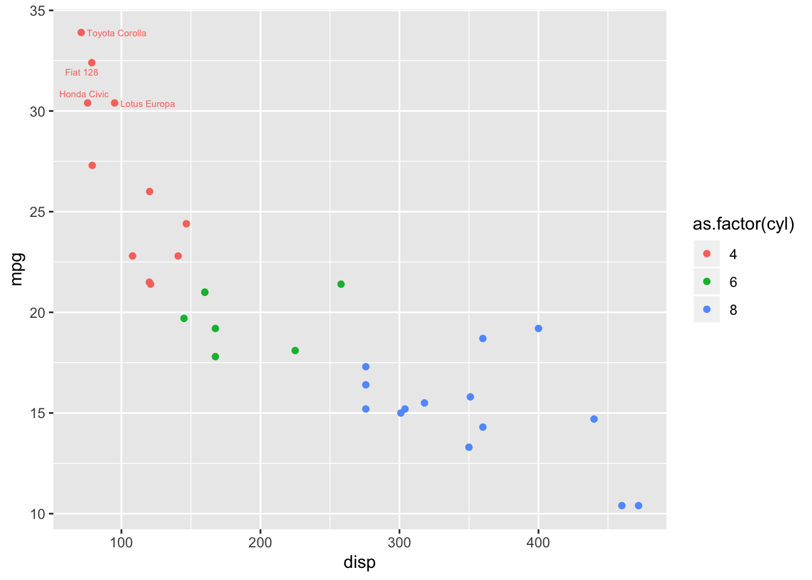
10.2.4 Meaningful symbols
ggplot(mtcars,
aes(disp, mpg, colour = as.factor(am), shape = as.factor(am))) +
geom_point(size = 8) +
scale_color_manual(values = c("0" = "blue", "1" = "red")) +
scale_shape_manual(values = c("0" = "\u2642", "1" = "\u2640")) +
labs(title = "custom shape: Male/Female")
10.2.5 Annotating with an inset plot
library(tidyverse)
diamonds.df = diamonds
## Specify area of the plot to highlight
xmin = .8; xmax = 1.2; ymin = 2000; ymax = 7500
higlight.df = diamonds.df %>%
filter(carat>xmin&carat<xmax, price>ymin&price<ymax)
overall.plot = ggplot(diamonds.df, aes(carat, price))+
geom_point(alpha = .3, size = .3)+
geom_rect(xmin = xmin, xmax = xmax, ymin = ymin, ymax = ymax,
fill = "transparent", color = "grey60")
inset.plot = ggplot(higlight.df, aes(carat, price))+
geom_point(alpha = .3, size = .2) +
labs(x = "", y = "") +
theme_minimal()
## Create custom annotation and add to
inset.grob <- ggplotGrob(inset.plot )
overall.plot + annotation_custom(grob = inset.grob,
xmin = 3.5, xmax = 5.2, ymin = 250, ymax = 16500)10.2.6 Labels on lines
library(ggpmisc) # For stat_poly_eq for equation annotation
formula <- y ~ poly(x, 1, raw = TRUE)
ggplot(mtcars, aes(x=disp, y=mpg)) +
geom_point() +
geom_smooth(method = "lm", formula = formula) + stat_poly_eq(aes(label = paste(..eq.label.., ..adj.rr.label..,
sep = "~~~~")), formula = formula, parse = TRUE, coef.digits = 2, label.x = 200, label.y = 30)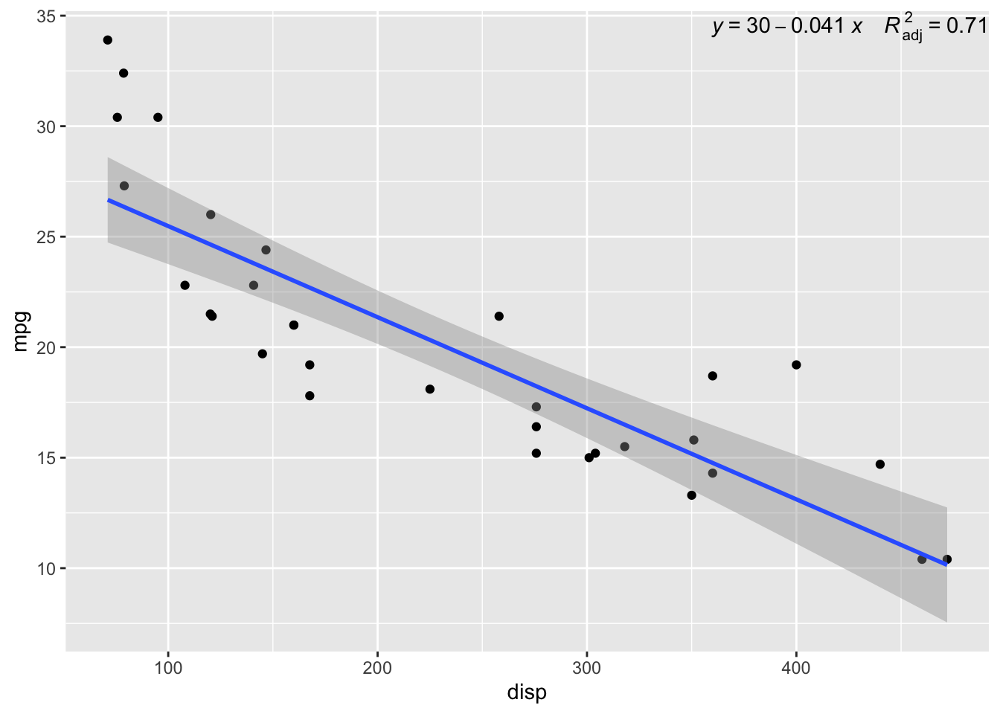
10.2.7 Adding and removing labels: title, axis labels, and facet labels
library(tidyverse)
library(ggalt)
library(ggrepel)
# Add names of cars to dataframe
mtcars.df = mtcars
mtcars.df$name = row.names(mtcars.df)
## Axis labels, title, and legend
ggplot(mtcars.df, aes(disp, mpg, color = as.factor(cyl))) +
geom_point()+
labs(x = "Displacement (cubic inches)", y = "Efficiency (mile per gallon)",
title = "Efficiency and engine size", colour = "Number of cylinders")
## Subtitle and caption
ggplot(mtcars.df, aes(disp, mpg, color = as.factor(cyl))) +
geom_point()+
labs(x = "Displacement (cubic inches)", y = quote(alpha + beta + frac(delta, theta)),
title = "Efficiency and engine size", subtitle = "mtcars data",
caption = "Caption if needed",
colour = "Number of cylinders")## Remove labels
ggplot(mtcars.df, aes(disp, mpg, color = as.factor(cyl))) +
geom_point()+
labs(x = "", y = "")## Facet labels
cyl_names <- as_labeller(c("4" = "Four", "6" = "Six", "8" = "Eight"))
ggplot(mtcars.df, aes(wt, mpg))+
geom_point() +
facet_grid(cyl ~ ., labeller = as_labeller(cyl_names))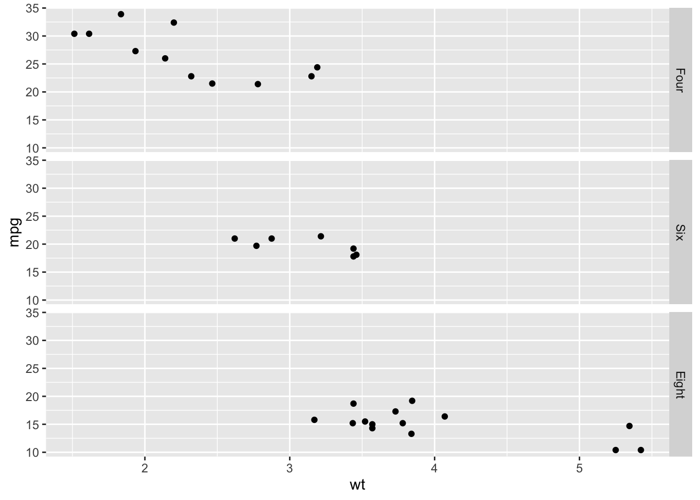
10.3 Position legend
# Place legend at bottom
ggplot(mtcars, aes(disp, mpg, color = as.factor(cyl))) + geom_point() +
theme(legend.position = "bottom")# Place legend in graph
ggplot(mtcars, aes(disp, mpg, color = as.factor(cyl))) + geom_point() +
theme(legend.position = c(0.9, 0.8))10.3.1 Remove one or more legends
ggplot(mtcars.df, aes(wt, mpg, colour = cyl, size = hp))+
geom_point()## Remove legend for single mapping
ggplot(mtcars.df, aes(wt, mpg, colour = cyl, size = hp))+
geom_point()+
guides(colour=FALSE)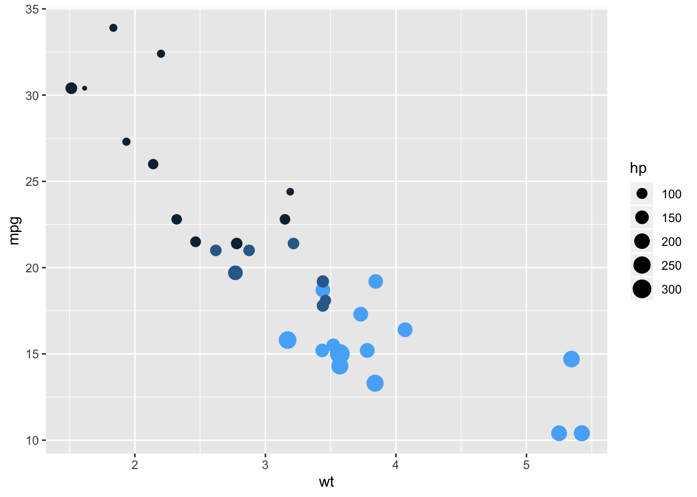
ggplot(mtcars.df, aes(wt, mpg, colour = cyl, size = hp))+
geom_point()+
scale_colour_continuous(guide=FALSE) 
## Remove legend for a single layer
ggplot(mtcars.df, aes(wt, mpg, colour = cyl, size = hp))+
geom_point(show.legend=FALSE)# Remove all legends
ggplot(mtcars, aes(disp, mpg, color = as.factor(cyl))) + geom_point() +
theme(legend.position = "none")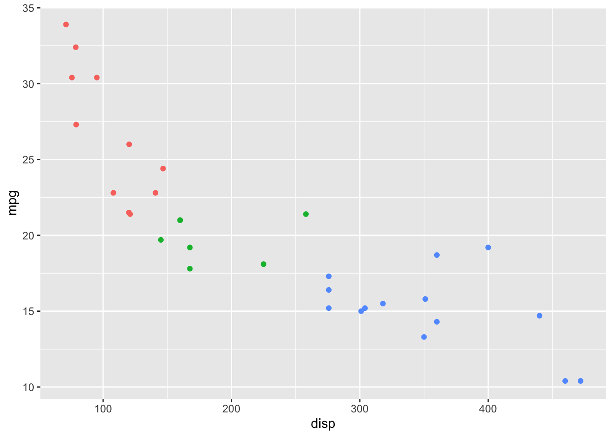
10.3.2 Setting limits on axis and position of graph
r ## Change axis limits to focus on part of data ggplot(mtcars.df, aes(wt, mpg))+ geom_point()

r ggplot(mtcars.df, aes(wt, mpg))+ geom_point()+ lims(x = c(3, 4))
## Warning: Removed 16 rows containing missing values ## (geom_point).

r ggplot(mtcars.df, aes(wt, mpg))+ geom_point()+ scale_x_continuous(limits = c(3, 4))
## Warning: Removed 16 rows containing missing values ## (geom_point).
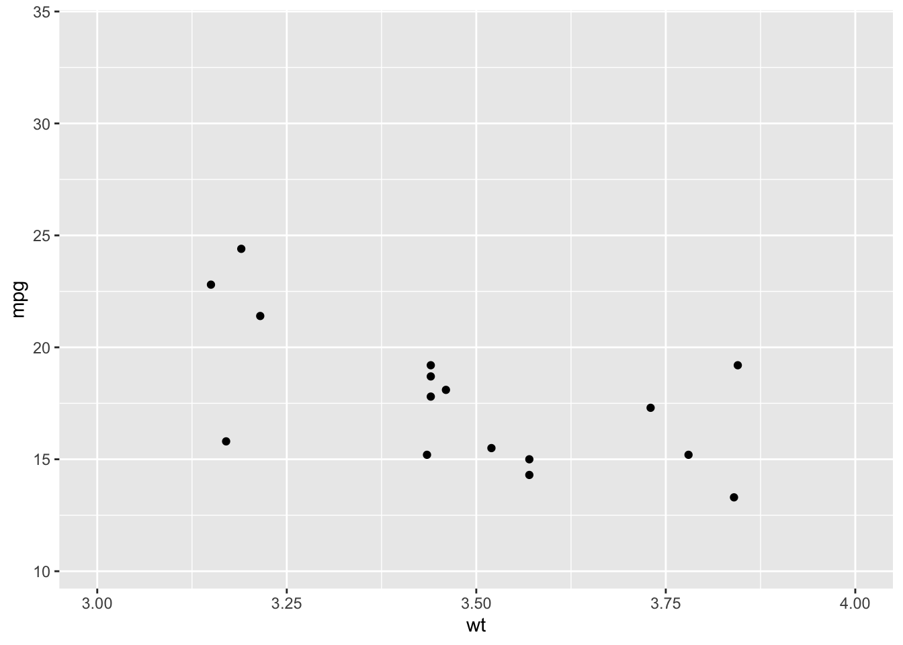
10.3.3 Adjust margin between points and edge of plot area
ggplot(mtcars.df, aes(wt, mpg))+
geom_point() +
scale_x_continuous(expand = c(0, 0)) +
scale_y_continuous(expand = c(0, 0)) 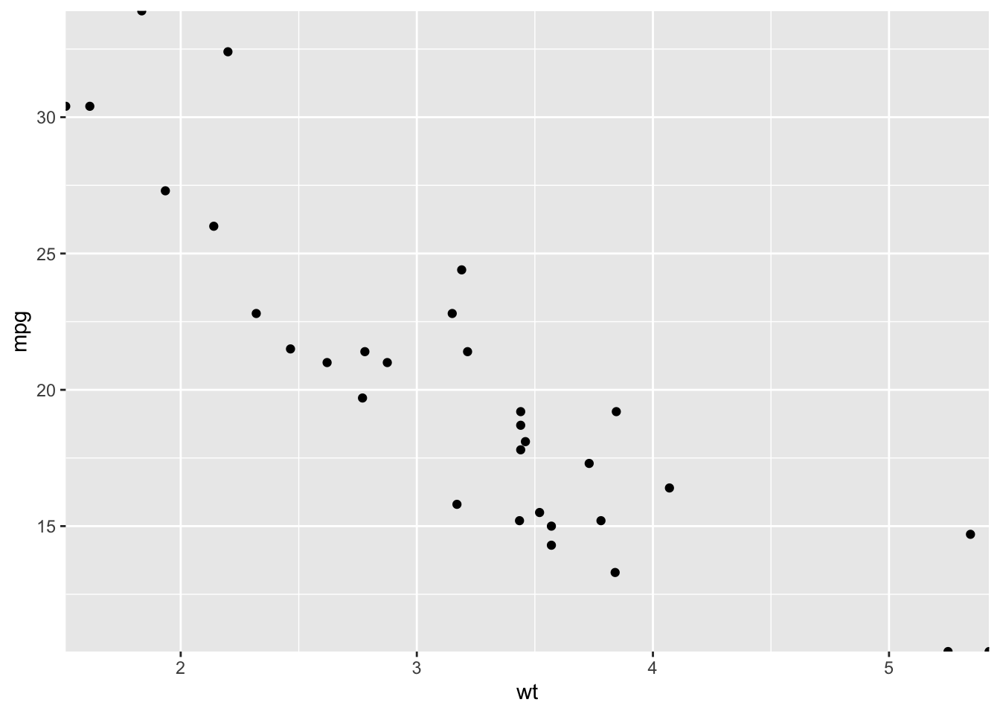
10.4 Color
The palette of colors that is scaled to the data is set separately for “fill” and for “colour”
Color palettes that work for discrete variables (e.g., factors) may not work for continuous, numeric variables
Color palette design is complex and choice depends on
Number of categories in the data Ability to support black and white printing
Ability to support color-deficient vision
Size of the space being colored
Small areas, such as points, benefit from saturated color, and large areas, such a bars are better with less intense color.
Great resources to explain the basis of the Brewer, Viridis, and ptol palettes: http://colorbrewer2.org/#type=sequential&scheme=BuGn&n=3
https://cran.r-project.org/web/packages/viridis/vignettes/intro-to-viridis.html
https://personal.sron.nl/~pault/
10.4.1 Resources to explain the basis form color choice
Brewer, Viridis, and ptol palettes http://colorbrewer2.org/#type=sequential&scheme=BuGn&n=3 https://cran.r-project.org/web/packages/viridis/vignettes/intro-to-viridis.html https://personal.sron.nl/~pault/
10.4.2 Large and small area colors
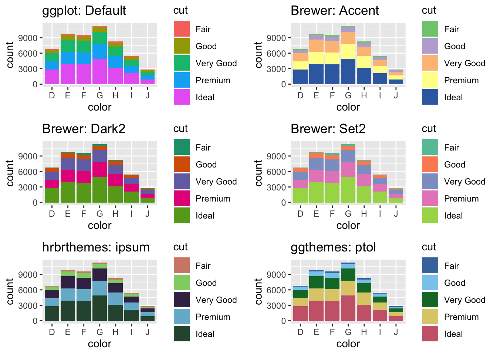
10.4.3 Color for large and small areas
What works for large areas of color might not work for small areas 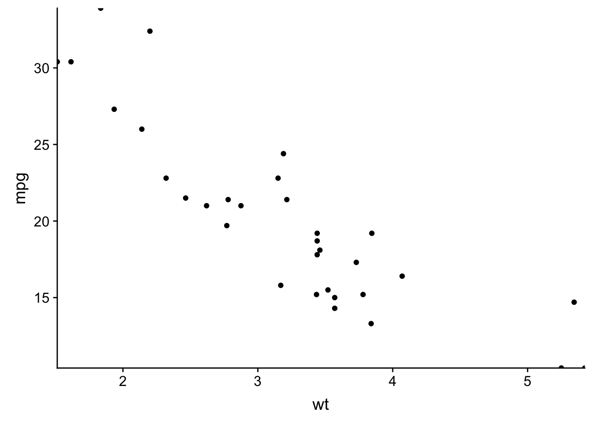
10.4.4 Continuous color scales
# Scales made for factors do not work with continuous variables
ggplot(mtcars, aes(disp, mpg, color = mpg))+geom_point()+
labs(title = "gplot: Default")ggplot(mtcars, aes(disp, mpg, color = mpg))+geom_point()+
scale_color_viridis(discrete = FALSE) +
labs(title = "viridis: viridis")##TODO Add parula10.4.5 Discrete color mappings
ggplot(diamonds, aes(x = color, fill = cut)) +
geom_bar() +
scale_fill_hue()+
labs(title = "ggplot: Default")ggplot(diamonds, aes(x = color, fill = cut)) + geom_bar() +
scale_fill_brewer(palette = "Accent") +
labs(title = "Brewer: Accent")10.5 Themes and theme options
Turn off many theme elements
ggplot(mtcars, aes(disp, mpg, color = as.factor(cyl))) +
geom_point() +
theme(axis.line=element_blank(), axis.text.x=element_blank(), axis.text.y=element_blank(), axis.ticks=element_blank(), axis.title.x=element_blank(), axis.title.y=element_blank(), legend.position="none", panel.background=element_blank(), panel.border=element_blank(), panel.grid.major=element_blank(), panel.grid.minor=element_blank(), plot.background=element_blank())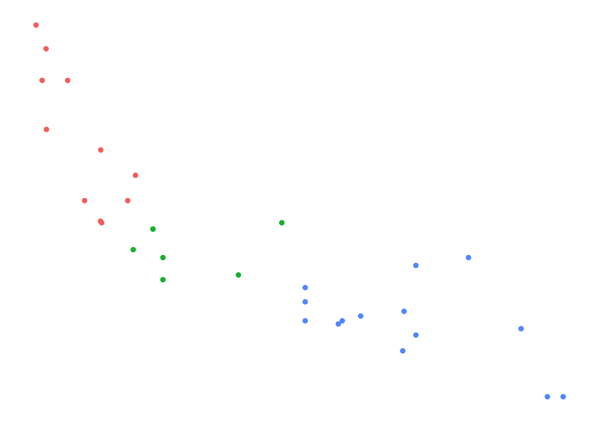
10.5.1 Remove chart details
Useful for plotting graphs and networks and maps
ggplot(mtcars, aes(disp, mpg, color = as.factor(cyl))) + geom_point() +
theme(axis.line=element_blank(),
axis.text.x=element_blank(),
axis.text.y=element_blank(),
axis.ticks=element_blank(),
axis.title.x=element_blank(),
axis.title.y=element_blank(),
legend.position="none",
panel.background=element_blank(),
panel.border=element_blank(),
panel.grid.major=element_blank(),
panel.grid.minor=element_blank(),
plot.background=element_blank())
10.5.2 Predefined themes adjust many elements
library(hrbrthemes) # Precise font and minimal grid
library(ggthemes) # Huge variety of themes including Tufte and Few
library(xkcd) # Plots in the xkcd comic styleAn engaging and fun theme ftp://200.236.31.7/CRAN/web/packages/xkcd/vignettes/xkcd-intro.pdf
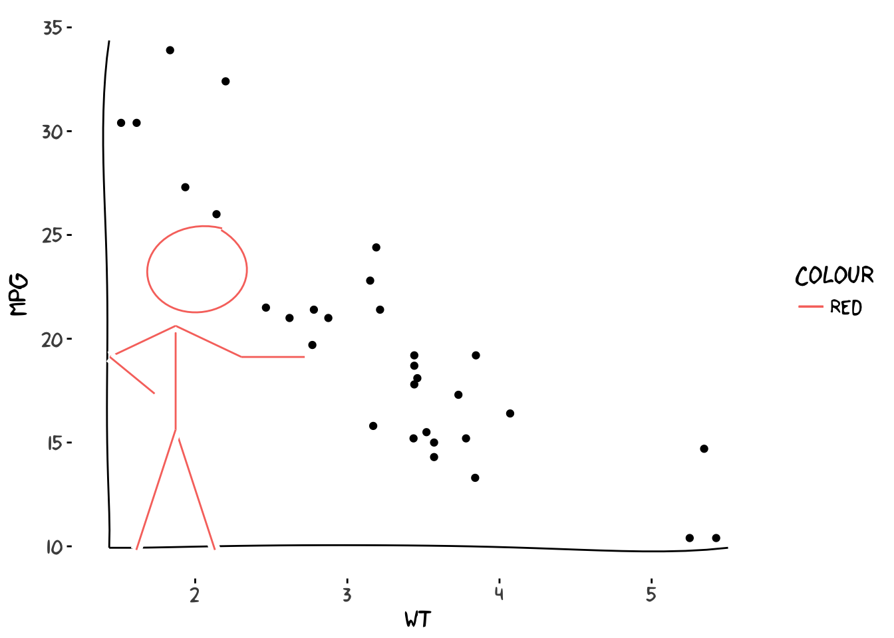
ggplot(mtcars, aes(disp, mpg, color = as.factor(cyl))) +
geom_point() +
theme_void()
ggplot(mtcars, aes(disp, mpg, color = as.factor(cyl))) +
geom_point() +
theme_minimal(base_size = 18, base_family = "Avenir")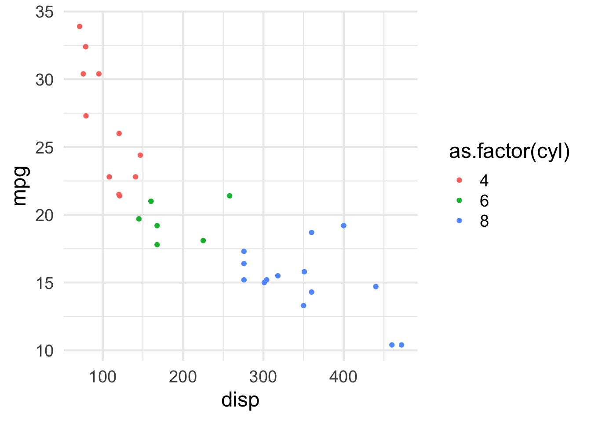
#ipsum, latin for neat
library(hrbrthemes)
ggplot(mtcars, aes(disp, mpg, color = as.factor(cyl))) +
geom_point() +
scale_colour_ipsum() +
theme_ipsum()
ggplot(mtcars, aes(disp, mpg, color = as.factor(cyl))) +
geom_point() +
scale_color_fivethirtyeight() +
theme_fivethirtyeight()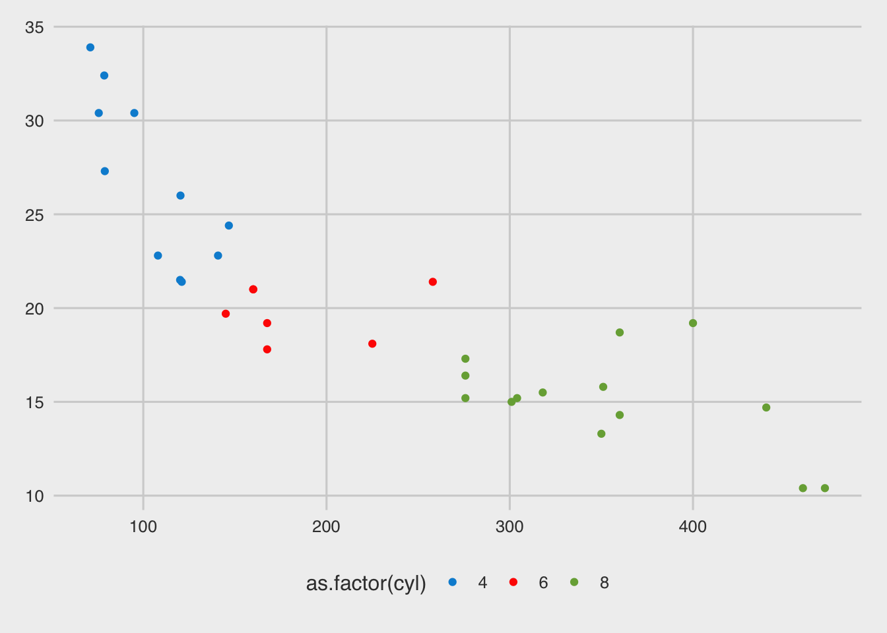
ggplot(mtcars, aes(disp, mpg, color = as.factor(cyl))) +
geom_point()+
scale_color_few() +
theme_few()ggplot(mtcars, aes(disp, mpg, color = as.factor(cyl))) +
geom_point()+
geom_rangeframe()+
theme_tufte()order of application matters
ggplot(mtcars, aes(disp, mpg, color = as.factor(cyl))) + geom_point()+ scale_colour_ipsum() +
theme_ipsum() +
theme(legend.position = c(.85, .8))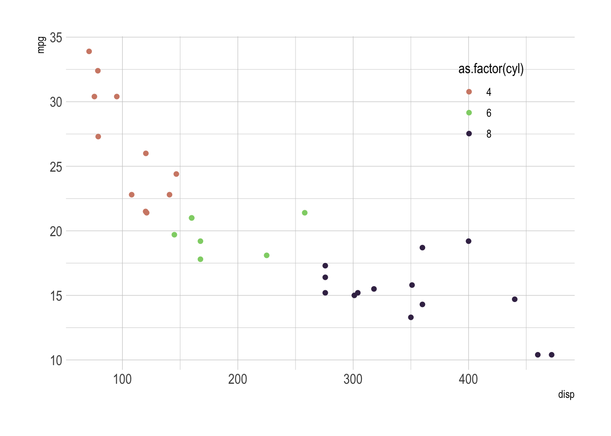
ggplot(mtcars, aes(disp, mpg, color = as.factor(cyl))) + geom_point()+ scale_colour_ipsum() +
theme_ipsum() +
theme(legend.position = c(.85, .8))+
theme_ipsum()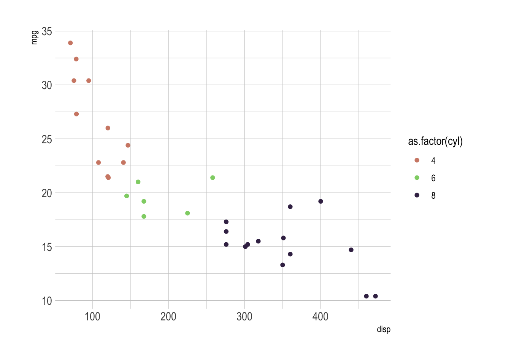
ggplot(mtcars.df, aes(wt, mpg)) +
geom_point()+
theme(axis.title.y = element_text(margin = margin(t = 10, r = 10, b = 80, l = 20)))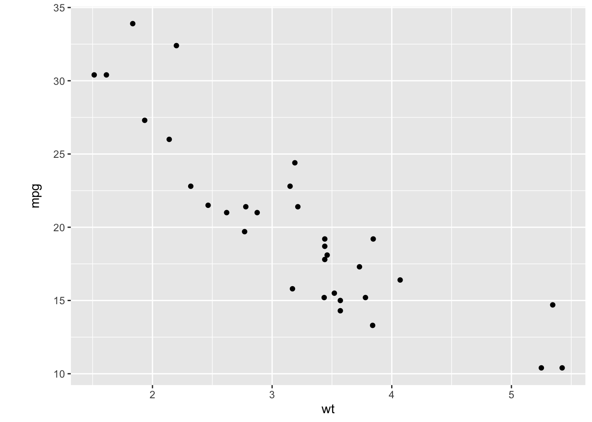
10.5.3 Ordering theme layers
# Sets theme then adjusts legend
ggplot(mtcars, aes(disp, mpg, color = as.factor(cyl))) + geom_point()+
theme_ipsum()+
theme(legend.position = c(.85, .8))
# Adjusts legend, but the overrides with setting theme
ggplot(mtcars, aes(disp, mpg, color = as.factor(cyl))) + geom_point()+
theme(legend.position = c(.85, .8))+
theme_ipsum()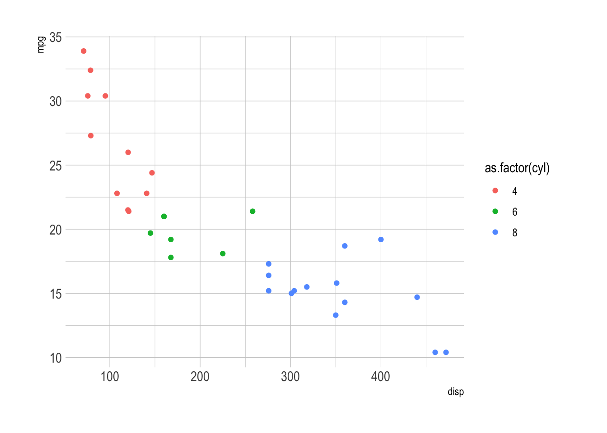
## To set for all plots
theme_set(theme_few())
ggplot(mtcars, aes(disp, mpg, color = as.factor(cyl))) + geom_point()
theme_set(theme_gray()) # Returns to default theme10.5.4 Pre-set theme options
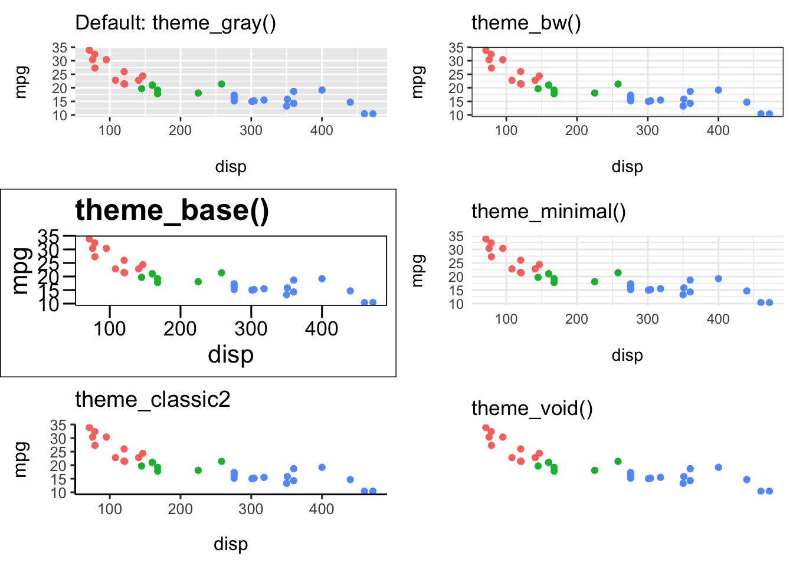
10.5.5 Themes form other packages
## Warning in grid.Call(C_textBounds,
## as.graphicsAnnot(x$label), x$x, x$y, : font family
## 'Arial Narrow' not found in PostScript font database
## Warning in grid.Call(C_textBounds,
## as.graphicsAnnot(x$label), x$x, x$y, : font family
## 'Arial Narrow' not found in PostScript font database
## Warning in grid.Call(C_textBounds,
## as.graphicsAnnot(x$label), x$x, x$y, : font family
## 'Arial Narrow' not found in PostScript font database
## Warning in grid.Call(C_textBounds,
## as.graphicsAnnot(x$label), x$x, x$y, : font family
## 'Arial Narrow' not found in PostScript font database
## Warning in grid.Call(C_textBounds,
## as.graphicsAnnot(x$label), x$x, x$y, : font family
## 'Arial Narrow' not found in PostScript font database
## Warning in grid.Call(C_textBounds,
## as.graphicsAnnot(x$label), x$x, x$y, : font family
## 'Arial Narrow' not found in PostScript font database
## Warning in grid.Call(C_textBounds,
## as.graphicsAnnot(x$label), x$x, x$y, : font family
## 'Arial Narrow' not found in PostScript font database
## Warning in grid.Call(C_textBounds,
## as.graphicsAnnot(x$label), x$x, x$y, : font family
## 'Arial Narrow' not found in PostScript font database
## Warning in grid.Call(C_textBounds,
## as.graphicsAnnot(x$label), x$x, x$y, : font family
## 'Arial Narrow' not found in PostScript font database
## Warning in grid.Call(C_textBounds,
## as.graphicsAnnot(x$label), x$x, x$y, : font family
## 'Arial Narrow' not found in PostScript font database
## Warning in grid.Call(C_textBounds,
## as.graphicsAnnot(x$label), x$x, x$y, : font family
## 'Arial Narrow' not found in PostScript font database
## Warning in grid.Call(C_textBounds,
## as.graphicsAnnot(x$label), x$x, x$y, : font family
## 'Arial Narrow' not found in PostScript font database
## Warning in grid.Call(C_textBounds,
## as.graphicsAnnot(x$label), x$x, x$y, : font family
## 'Arial Narrow' not found in PostScript font database
## Warning in grid.Call(C_textBounds,
## as.graphicsAnnot(x$label), x$x, x$y, : font family
## 'Arial Narrow' not found in PostScript font database
## Warning in grid.Call(C_textBounds,
## as.graphicsAnnot(x$label), x$x, x$y, : font family
## 'Arial Narrow' not found in PostScript font database
## Warning in grid.Call(C_textBounds,
## as.graphicsAnnot(x$label), x$x, x$y, : font family
## 'Arial Narrow' not found in PostScript font database
## Warning in grid.Call(C_textBounds,
## as.graphicsAnnot(x$label), x$x, x$y, : font family
## 'Arial Narrow' not found in PostScript font database
## Warning in grid.Call(C_textBounds,
## as.graphicsAnnot(x$label), x$x, x$y, : font family
## 'Arial Narrow' not found in PostScript font database
## Warning in grid.Call(C_textBounds,
## as.graphicsAnnot(x$label), x$x, x$y, : font family
## 'Arial Narrow' not found in PostScript font database
## Warning in grid.Call(C_textBounds,
## as.graphicsAnnot(x$label), x$x, x$y, : font family
## 'Arial Narrow' not found in PostScript font database
## Warning in grid.Call(C_textBounds,
## as.graphicsAnnot(x$label), x$x, x$y, : font family
## 'Arial Narrow' not found in PostScript font database
## Warning in grid.Call(C_textBounds,
## as.graphicsAnnot(x$label), x$x, x$y, : font family
## 'Arial Narrow' not found in PostScript font database
## Warning in grid.Call(C_textBounds,
## as.graphicsAnnot(x$label), x$x, x$y, : font family
## 'Arial Narrow' not found in PostScript font database
## Warning in grid.Call(C_textBounds,
## as.graphicsAnnot(x$label), x$x, x$y, : font family
## 'Arial Narrow' not found in PostScript font database
## Warning in grid.Call(C_textBounds,
## as.graphicsAnnot(x$label), x$x, x$y, : font family
## 'Arial Narrow' not found in PostScript font database
## Warning in grid.Call(C_textBounds,
## as.graphicsAnnot(x$label), x$x, x$y, : font family
## 'Arial Narrow' not found in PostScript font database
## Warning in grid.Call(C_textBounds,
## as.graphicsAnnot(x$label), x$x, x$y, : font family
## 'Arial Narrow' not found in PostScript font database
## Warning in grid.Call(C_textBounds,
## as.graphicsAnnot(x$label), x$x, x$y, : font family
## 'Arial Narrow' not found in PostScript font database
## Warning in grid.Call(C_textBounds,
## as.graphicsAnnot(x$label), x$x, x$y, : font family
## 'Arial Narrow' not found in PostScript font database
## Warning in grid.Call(C_textBounds,
## as.graphicsAnnot(x$label), x$x, x$y, : font family
## 'Arial Narrow' not found in PostScript font database
## Warning in grid.Call(C_textBounds,
## as.graphicsAnnot(x$label), x$x, x$y, : font family
## 'Arial Narrow' not found in PostScript font database
## Warning in grid.Call(C_textBounds,
## as.graphicsAnnot(x$label), x$x, x$y, : font family
## 'Arial Narrow' not found in PostScript font database
## Warning in grid.Call(C_textBounds,
## as.graphicsAnnot(x$label), x$x, x$y, : font family
## 'Arial Narrow' not found in PostScript font database
## Warning in grid.Call(C_textBounds,
## as.graphicsAnnot(x$label), x$x, x$y, : font family
## 'Arial Narrow' not found in PostScript font database
## Warning in grid.Call(C_textBounds,
## as.graphicsAnnot(x$label), x$x, x$y, : font family
## 'Arial Narrow' not found in PostScript font database
## Warning in grid.Call(C_textBounds,
## as.graphicsAnnot(x$label), x$x, x$y, : font family
## 'Arial Narrow' not found in PostScript font database
## Warning in grid.Call(C_textBounds,
## as.graphicsAnnot(x$label), x$x, x$y, : font family
## 'Arial Narrow' not found in PostScript font database
## Warning in grid.Call(C_textBounds,
## as.graphicsAnnot(x$label), x$x, x$y, : font family
## 'Arial Narrow' not found in PostScript font database
## Warning in grid.Call(C_textBounds,
## as.graphicsAnnot(x$label), x$x, x$y, : font family
## 'Arial Narrow' not found in PostScript font database
## Warning in grid.Call(C_textBounds,
## as.graphicsAnnot(x$label), x$x, x$y, : font family
## 'Arial Narrow' not found in PostScript font database
## Warning in grid.Call(C_textBounds,
## as.graphicsAnnot(x$label), x$x, x$y, : font family
## 'Arial Narrow' not found in PostScript font database
## Warning in grid.Call(C_textBounds,
## as.graphicsAnnot(x$label), x$x, x$y, : font family
## 'Arial Narrow' not found in PostScript font database## Warning in align_plots(plotlist = plots, align = align,
## axis = axis): Complex graphs cannot be vertically
## aligned unless axis parameter is set properly. Placing
## graphs unaligned.## Warning in align_plots(plotlist = plots, align = align,
## axis = axis): Graphs cannot be horizontally aligned,
## unless axis parameter set. Placing graphs unaligned.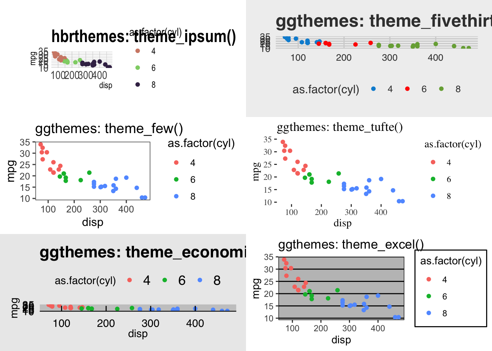
10.6 Saving and printing plots to include in documents
For formal documents save graphs and import. Do not cut and paste from RStudio Saving and importing provides consistent physical size, resolution, and aspect ratio: DO NOT re-scale in the document Vector formats (PDF, SVG)
Provide crisp images even when zoomed in and raster File size scales with number of data points Raster formats (PNG, TIFF)
The dpi (dots per inch) defines the resolution of the image File size scales with dimensions of graph and dpi
10.6.1 PNG, JPEG, PDF, and SVG
mpg.plot = ggplot(mtcars,
aes(disp, mpg, color = as.factor(cyl))) +
geom_point()
ggsave(filename = "mpg.png",
device = "png",
plot = mpg.plot, height = 4, width = 5, units = "in",
dpi = 300)
ggsave(filename = "mpg.pdf", device = "pdf",
plot = mpg.plot, height = 4, width = 5, units = "in")library(svglite)
ggplot(mtcars, aes(disp, mpg, color = as.factor(cyl))) + geom_point()mpg.plot = ggplot(mtcars, aes(disp, mpg, color = as.factor(cyl))) + geom_point()
## Possible formats:
# "eps", "ps", "tex" (pictex), "pdf", "jpeg", "tiff", "png", "bmp", "svg" or "wmf" (windows only)
## PNG--raster format that looks blurry at low resolution
ggsave(filename = "mpg.png", device = "png",
plot = mpg.plot, height = 4, width = 5, units = "in", dpi = 300)
## PDF--vector format that remains sharp even when zoomed in
ggsave(filename = "mpg.pdf", device = "pdf",
plot = mpg.plot, height = 4, width = 5, units = "in")
## SVG--vector format that remains sharp even when zoomed in
ggsave(filename = "mpg.svg", device = "svg",
plot = mpg.plot, height = 4, width = 5, units = "in")
## Saving many plots into a single file
# Calculate the number of pages with 9 panels per page
n_pages <- ceiling(
length(levels(diamonds$color)) * length(levels(diamonds$cut:diamonds$clarity)) / 9
)
pdf("multipage.pdf")
for (i in seq_len(n_pages)) {
p= ggplot(diamonds, aes(carat, price)) +
geom_point(alpha = 0.1) +
facet_grid_paginate(color~cut:clarity, ncol = 3, nrow = 3, page = i)+
labs(title = "ggforce: facet pagination")
print(p)
}
dev.off()## quartz_off_screen
## 210.6.2 Combining multiple graphs for publication
library(ggpubr)
displ.plot = ggplot(mtcars, aes(disp, mpg)) + geom_point()
hp.plot = ggplot(mtcars, aes(hp, mpg)) + geom_point()
combined.plot = ggarrange(displ.plot, hp.plot, nrow=1, ncol = 2, align = "hv")
combined.plot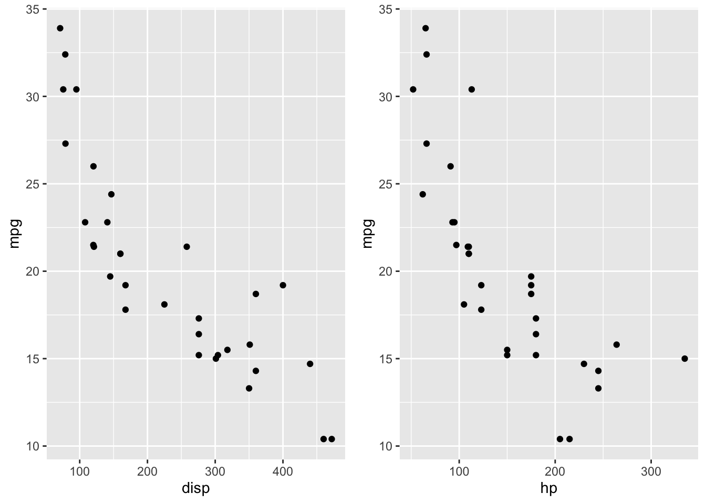
10.6.3 Faceted pagination
library(ggforce)
## Examples from: https://cran.r-project.org/web/packages/ggforce/vignettes/Visual_Guide.html
ggplot(diamonds, aes(carat, price)) +
geom_point(alpha = 0.1) +
facet_grid_paginate(color~cut:clarity, ncol = 3, nrow = 3, page = 1)+
labs(title = "ggforce: facet pagination")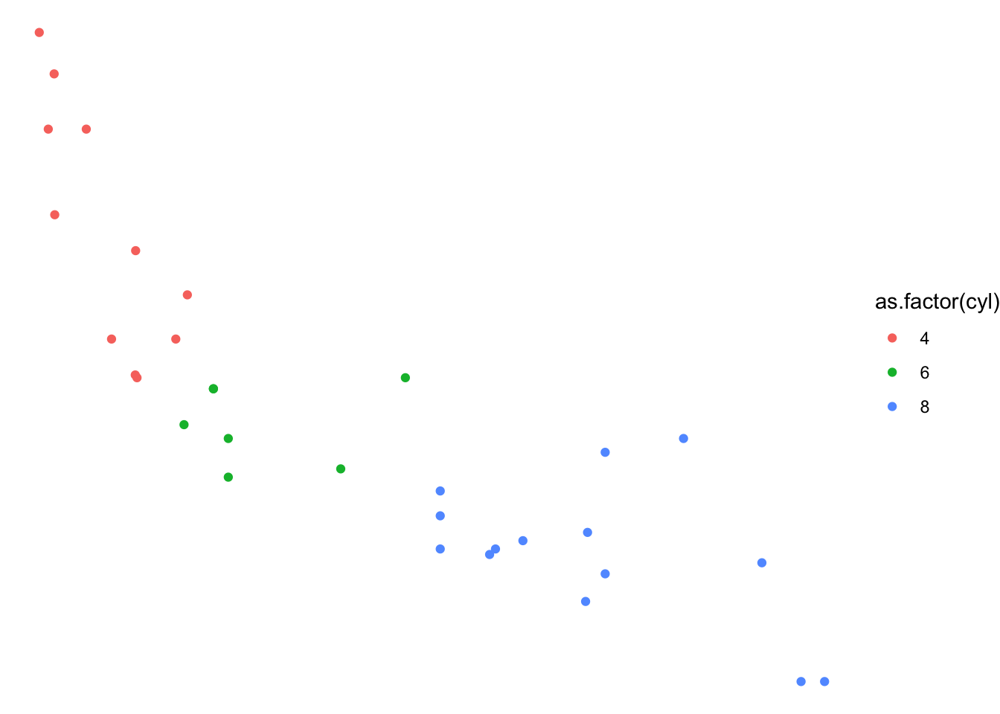